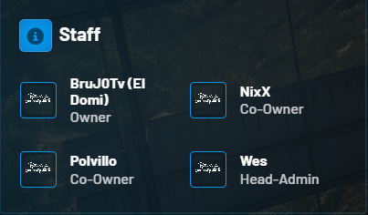
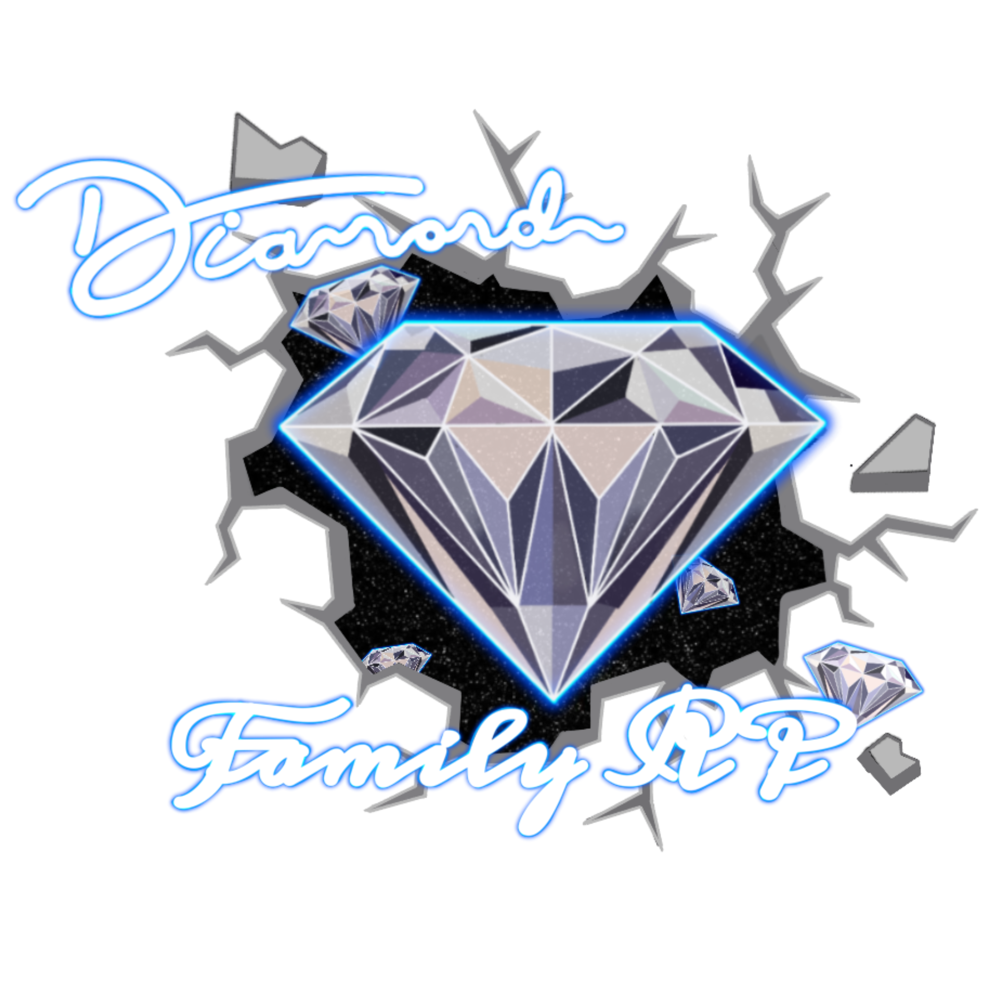

Nuestro Porposito es tener una comuniada, no toxica, en donde puedes venir y compartir en familia. Si nunca has sido parte de la cominudad de roleplay o llevas poco tiempo, aqui podras llegar y aprender todo lo que necesitas, estamos en la mayor dispocicion de ayudarte. Queremos llevar un concepto de lo que es el verdadero roleplay. Queremos que te sientas comodo y en confianza de pedir ayuda en lo que necesites. Ven y disfruta de una comunidad la cual queremos diferente y sana. Te damos la Bienvenida , Rolea y Disfruta.
Aqui el discord para mas informacion

Contamos con un buen equipo de trabajo con mucha experiencia. proyecto cual es dirigido principalmente por BrujoTv y Polvillo.
El Equipo Staff de Discord es una mezcla diversa de individuos apasionados por la comunicación, la tecnología y la comunidad. Están compuestos por moderadores, administradores y expertos en diversas áreas. Su misión principal es asegurarse de que los usuarios tengan una experiencia positiva en la plataforma y, sobre todo, que siempre tengan un lugar al que acudir cuando necesiten ayuda. Estos dedicados miembros del equipo están disponibles las 24 horas del día, los 7 días de la semana, para responder a las preguntas y preocupaciones de los usuarios. No importa en qué zona horaria te encuentres, siempre habrá alguien dispuesto a brindar asistencia. Puedes encontrarlos en los canales de ayuda específicos, donde se han especializado en una variedad de temas, desde problemas técnicos hasta preguntas sobre moderación y configuración. Uno de los aspectos más destacados del Equipo Staff de Discord es su compromiso con la apertura y la accesibilidad. Animamos a los usuarios a no dudar en abrir un "ticket" cuando enfrenten un problema o tengan una pregunta. Los tickets son solicitudes de ayuda que se procesan de manera rápida y eficiente, asegurando que nadie se quede sin la asistencia necesaria.

